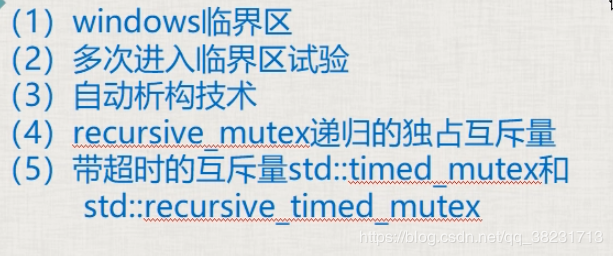
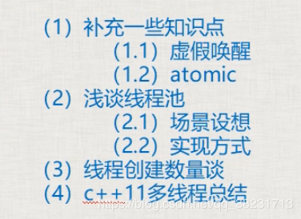

第十二节 windows临界区、其他各种mutex互斥量

一和二、windows临界区
Windows临界区，同一个线程是可以重复进入的，但是进入的次数与离开的次数必须相等。
C++互斥量则不允许同一个线程重复加锁。
windows临界区是在windows编程中的内容，了解一下即可，效果几乎可以等同于c++11的mutex
包含#include <windows.h>
windows中的临界区同mutex一样，可以保护一个代码段。但windows的临界区可以进入多次，离开多次，但是进入的次数与离开的次数必须相等，不会引起程序报异常出错。
1
2
3
4
5
6
7
8
9
10
11
12
13
14
15
16
17
18
19
20
21
22
23
24
25
26
27
28
29
30
31
32
33
34
35
36
37
38
39
40
41
42
43
44
45
46
47
48
49
50
51
52
53
54
55
56
57
58
59
60
61
62
63
64
65
66
67
68
69
70
71
72
73
74
75
76
77
78
79
80
81
82
83
84
85
86
87
88
89
90
91
92
93
94
95
96
97
98
99
100
101
102
103
104
105
106
107
108
| #include <iostream>
#include <thread>
#include <list>
#include <mutex>
#include <Windows.h>
#define __WINDOWSJQ_
using namespace std;
class A
{
public:
void inMsgRecvQueue()
{
for (size_t i = 0; i < 1000; ++i)
{
cout << "收到消息，并放入队列 " << i << endl;
#ifdef __WINDOWSJQ_
EnterCriticalSection(&my_winsec);
msgRecvQueue.push_back(i);
LeaveCriticalSection(&my_winsec);
#elif
my_mutex.lock();
msgRecvQueue.push_back(i);
my_mutex.unlock();
#endif
}
cout << "消息入队结束" << endl;
}
void outMsgRecvQueue()
{
for (size_t i = 0; i < 1000; ++i)
{
#ifdef __WINDOWSJQ_
EnterCriticalSection(&my_winsec);
if (!msgRecvQueue.empty())
{
int num = msgRecvQueue.front();
cout << "从消息队列中取出 " << num << endl;
msgRecvQueue.pop_front();
}
else
{
cout << "消息队列为空 " << endl;
}
LeaveCriticalSection(&my_winsec);
#elif
my_mutex.lock();
if (!msgRecvQueue.empty())
{
int num = msgRecvQueue.front();
cout << "从消息队列中取出 " << num << endl;
msgRecvQueue.pop_front();
my_mutex.unlock();
}
else
{
cout << "消息队列为空 " << endl;
my_mutex.unlock();
}
#endif
}
cout << "消息出队结束" << endl;
}
A()
{
#ifdef __WINDOWSJQ_
InitializeCriticalSection(&my_winsec);
#endif
}
private:
list<int> msgRecvQueue;
mutex my_mutex;
#ifdef __WINDOWSJQ_
CRITICAL_SECTION my_winsec;
#endif
};
int main()
{
A myobj;
thread myInMsgObj(&A::inMsgRecvQueue, &myobj);
thread myOutMsgObj(&A::outMsgRecvQueue, &myobj);
myInMsgObj.join();
myOutMsgObj.join();
getchar();
return 0;
}
123456789101112131415161718192021222324252627282930313233343536373839404142434445464748495051525354555657585960616263646566676869707172737475767778798081828384858687888990919293949596979899100101102103104105106107
|
三、自动析构技术
C++：lock_guard防止忘了释放信号量，自动释放
windows：可以写个类自动释放临界区：
1
2
3
4
5
6
7
8
9
10
11
12
13
14
15
| class CWinLock {
public:
CWinLock(CRITICAL_SECTION *pCritmp)
{
my_winsec =pCritmp;
EnterCriticalSection(my_winsec);
}
~CWinLock()
{
LeaveCriticalSection(my_winsec)
};
private:
CRITICAL_SECTION *my_winsec;
};
1234567891011121314
|
上述这种类RAII类（Resource Acquisition is initialization），即资源获取及初始化。容器，智能指针属于这种类。
四、递归独占互斥量 std::recursive_mutex
std::mutex 独占式互斥量
std::recursive_mutex：允许在同一个线程中同一个互斥量多次被 lock() ，（但是递归加锁的次数是有限制的，太多可能会报异常），效率要比mutex低。
如果你真的用了 recursive_mutex 要考虑代码是否有优化空间，如果能调用一次 lock()就不要调用多次。
五、带超时的互斥量 std::timed_mutex 和 std::recursive_timed_mutex
5.1 std::timed_mutex：是待超时的独占互斥量
等待一段时间，如果拿到了锁，或者超时了未拿到锁，就继续执行（有选择执行）如下：
1
2
3
4
5
6
7
8
9
| std::chrono::milliseconds timeout(100);
if (my_mymutex.try_lock_for(timeout)){
}
else{
std::chrono::milliseconds sleeptime(100);
std::this_thread::sleep_for(sleeptime);
}
12345678
|
参数是一个未来的时间点，在这个未来的时间没到的时间内，如果拿到了锁头，流程就走下来，如果时间到了没拿到锁，流程也可以走下来。
1
2
3
4
5
6
7
8
9
10
| std::chrono::milliseconds timeout(100);
if (my_mymutex.try_lock_until(chrono::steady_clock::now() + timeout)){
}
else{
std::chrono::milliseconds sleeptime(100);
std::this_thread::sleep_for(sleeptime);
}
12345678
|
两者的区别就是一个参数是时间段，一个参数是时间点
5.2 std::recursive_timed_mutex：是待超时的递归独占互斥量
第十三章 补充知识、线程池浅谈、数量谈、总结

一、补充一些知识点
1.1 虚假唤醒：
notify_one或者notify_all唤醒wait()后，实际有些线程可能不满足唤醒的条件，就会造成虚假唤醒，可以在wait中再次进行判断解决虚假唤醒。
解决：wait中要有第二个参数（lambda），并且这个lambda中要正确判断所处理的公共数据是否存在。
2.2 atomic：
1
2
3
4
| std::atomic<int> atm = 0;
cout << atm << endl;
123
|
这里只有读取atm是原子操作，但是整个这一行代码 cout << atm << endl; 并不是原子操作，导致最终显示在屏幕上的值是一个“曾经值”。
1
2
3
4
| std::atomic<int> atm = 0;
auto atm2 = atm;
123
|
这种拷贝初始化不可以，会报错。
1
2
| atomic<int> atm2(atm.load());
1
|
load()：以原子方式读atomic对象的值。
原子操作实质上是：不允许在进行原子对象操作时进行CPU的上下文切换。
二、浅谈线程池：
场景设想：服务器程序， 每来一个客户端，就创建一个新线程为这个客户提供服务。
问题：
1、2万个玩家，不可能给每个玩家创建一个新线程，此程序写法在这种场景下不通。
2、程序稳定性问题：编写代码中，“时不时地突然”创建一个线程，这种写法，一般情况下不会出错，但是不稳定的；
线程池：把一堆线程弄到一起，统一管理。这种统一管理调度，循环利用的方式，就叫做线程池。
实现方式：程序启动时，一次性创建好一定数量的线程。这种方式让人更放心，觉得程序代码更稳定。
三、线程创建数量谈：
1、线程创建的数量极限的问题
一般来讲，2000个线程基本就是极限；再创建就会崩溃。
2、线程创建数量建议
a、采用某些计数开发程序提供的建议，遵照建议和指示来确保程序高效执行。
b、创建多线程完成业务；考虑可能被阻塞的线程数量，创建多余最大被阻塞线程数量的线程，如100个线程被阻塞再充值业务，开110个线程就是很合适的
c、线程创建数量尽量不要超过500个，尽量控制在200个之内；